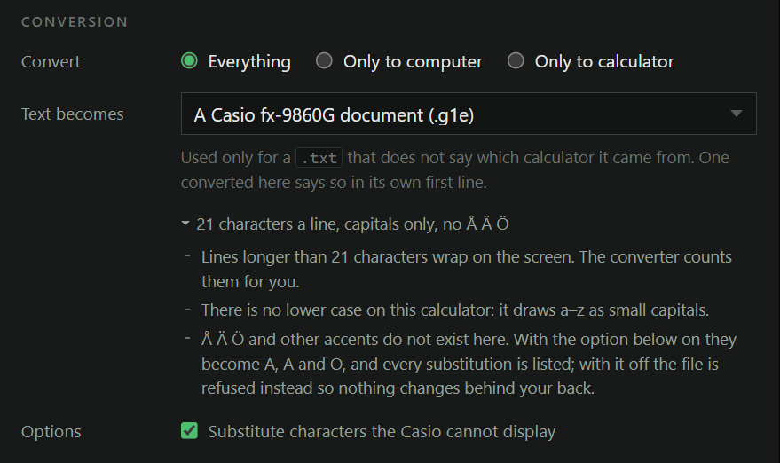

A folder in, a folder out
Notes written on a graphing calculator are stuck there. Getting them onto a computer to edit, print or search means converting each file one by one, and getting them back on again means doing it in reverse. This tool takes the whole folder in one pass: Casio .g1e documents and TI-83/84 .8xp programs to plain text, and text back into files the calculator will open.
It also says what will not fit before you find out on the calculator: lines too long for a 21-character screen, characters the Casio cannot draw, tokens that need a newer TI. Every format states its own limits next to the control that picks it, so Å becoming A is something you read beforehand rather than discover afterwards.

Two problems, one of them invisible
For Casio documents the problem is effort. The converter most people use is a Windows program from 2012 that handles one file at a time, so a folder of revision notes is a few hundred clicks.
For TI programs the problem is correctness, and it is the kind you do not notice. TI-BASIC is stored as tokens rather than text, and turning text back into tokens is genuinely ambiguous: L1 is either the list L1 or the letter L followed by the digit 1. Existing tools resolve this by guessing longest-match, which is why a program containing pin can come back containing πn.
Instead of guessing, it writes text that can only be read one way, and proves that claim on every token of every file. CI re-checks all 654,481 pairs on each commit, along with every token alone and 400 random token streams, with no sample files required.
Writing the specification that did not exist
The Casio .g1e document format has no public specification. Cahute, the reference open-source toolset for these formats, documents the container and then marks the document body itself as still to be described. There was nothing to implement against.
So I worked it out by comparing documents against the text they were made from, purely from data files, byte by byte. No manufacturer software was decompiled or disassembled, and no code from any existing converter was read or reused. The result is a written specification of the format, published in the repository so the next person does not have to repeat the work.
“Byte-exact” is the standard the test suite holds it to, in both directions: take a file the manufacturer's own software produced, decode it, re-encode it from scratch, and every single byte matches.
No server, no upload, no build step
The codecs are plain ES modules with zero dependencies, so the same files run in Node and in a browser through a single module script tag. That one property is what lets the project ship three front ends without three implementations.
The web app makes no network requests at all, and its Content-Security-Policy enforces that rather than merely promising it. Files are read and written on your own machine, and the app keeps working offline once loaded. In Chrome and Edge it writes results straight into a folder you pick, and remembers that folder between visits.
Browser
Nothing to install. Drop a folder in, choose where the results go.
Open it in a tab
Command line
Scriptable, with a dry run that writes nothing until you are happy.
npx calcconv notes/ -o text/
Desktop
Windows, macOS and Linux builds. The same interface, fully offline.
Attached to each release
Built because I needed it
This is not a demo project. I write my exam revision notes on the calculator, and the screenshot at the top of this page is the real tool converting my own thermodynamics and decision-analysis notes: six files, 1,214 lines, in one pass. Those same files are what the encoders are tested against.
The whole thing is AGPL-3.0 and the format documentation is open, because the reason it had to be written in the first place was that nobody had published theirs.